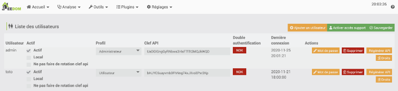
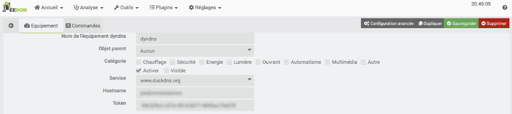
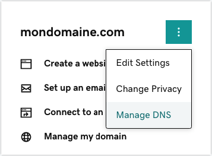
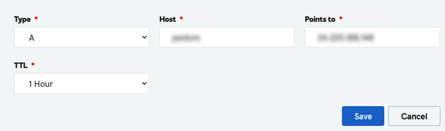
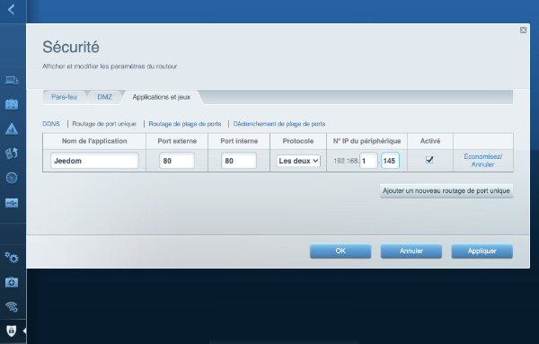
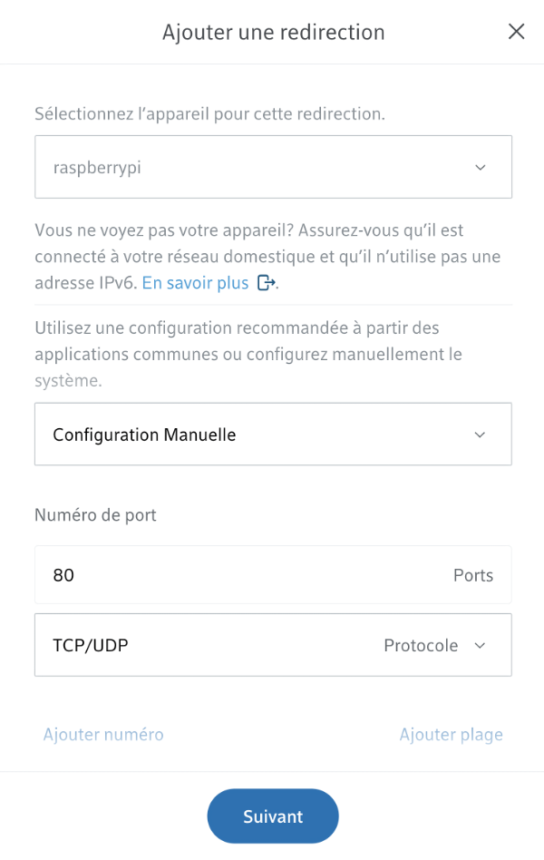
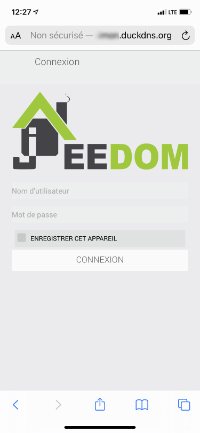
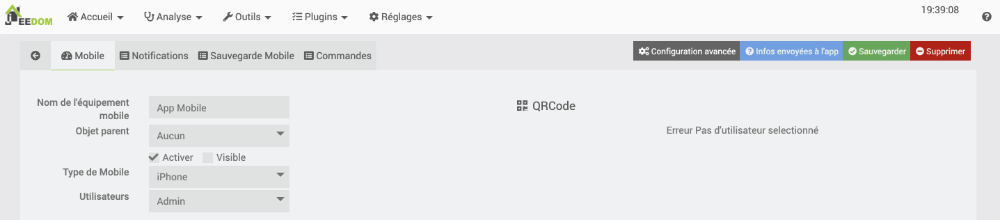
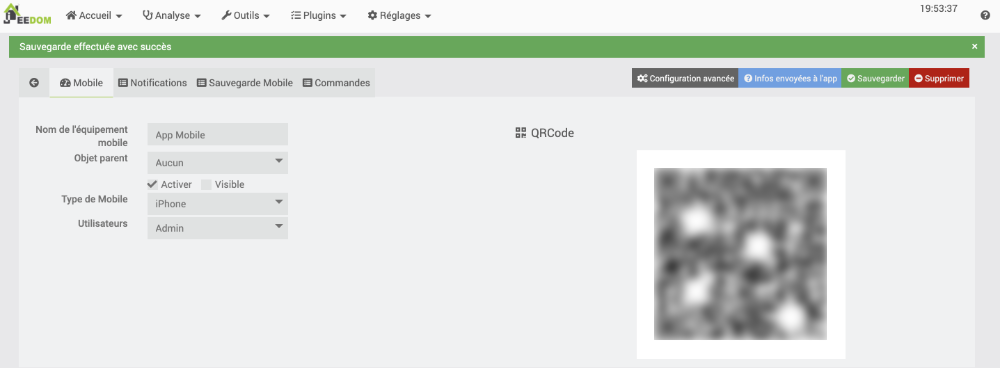

23. Autres aspects intéressants avec Jeedom¶
23.1 Réinitialiser le mot de passe Jeedom¶
Si vous avez perdu un mot de passe Jeedom, que ce soit pour l'usager admin ou pour un autre, vous pouvez le réinitialiser à condition d'avoir accès au terminal Linux du Raspberry Pi sur lequel Jeedom est installé.
Ceci peut être fait en branchant un clavier et un écran sur le Pi ou encore via SSH.
Je vous conseille vivement le branchement via SSH puisque le nouveau mot de passe apparaîtra à l'écran et, puisqu'il est très long, il sera plus facile de faire un copier-coller pour l'entrer dans l'interface Web.
Notez que si vous avez encore un accès administrateur, il est préférable d'utiliser la méthode indiquée plus bas pour modifier le mot de passe à l'aide de l'interface Jeedom.
Réinitialisation à l'aide du terminal¶
Je vous propose deux techniques pour réinitialiser le mot de passe à l'aide du Terminal.
La première modifiera directement le mot de passe de l'usager admin.
La seconde créera un usager temporaire avec lequel vous pourrez vous connecter afin de rétablir le mot de passe de l'usager admin.
Modification directe du mot de passe admin¶
Pour entrer vous-même le nouveau mot de passe, entrez cette commande dans le terminal du Pi :
Terminal
Vous pouvez également laisser Jeedom générer un mot de passe (attention : il sera long...) à l'aide de cette commande :
Terminal
Vous serez invité à entrer le nom de l'usager pour lequel le mot de passe doit être réinitialisé.
Le programme vous affichera ensuite le nouveau mot de passe. Prenez-le bien en note, il ne sera pas facile à retenir!
Résultat à l'écran
pi@raspberrypi:~ $ php /var/www/html/install/reset\_password.php
Reset user password
List of user :
- admin
- toto
Please type login :
admin
Operation successfull, your new password for user admin is xs3FWlI8GI7HRRT9PW2MVD6sVeCJfTrO
Une fois reconnecté à Jeedom avec un compte d'administrateur, vous pourrez remettre un mot de passe plus facile à retenir.
Création d'un usager temporaire¶
Si la méthode précédente vous pose problème ou simplement si vous souhaitez utiliser une technique différente, vous pouvez suivre ces étapes.
- Vous aurez besoin du mot de passe qui permet d'accéder à la console MySQL. Pour le retrouver, lancez cette commande dans le terminale du Pi :
Terminal
Résultat à l'écran
pi@jeedom:~ $ cat /var/www/html/core/config/common.config.php
<?php
/\* This file is part of Jeedom. \*
\* Jeedom is free software: you can redistribute it and/or modify
\* it under the terms of the GNU General Public License as published by
\* the Free Software Foundation, either version 3 of the License, or
\* (at your option) any later version. \* \* Jeedom is distributed in the hope that it will be useful,
\* but WITHOUT ANY WARRANTY; without even the implied warranty of
\* MERCHANTABILITY or FITNESS FOR A PARTICULAR PURPOSE. See the
\* GNU General Public License for more details.
\*
\* You should have received a copy of the GNU General Public License
\* along with Jeedom. If not, see <http://www.gnu.org/licenses/>.
\*/
/\* \* \*\*\*\*\*\*\*\*\*\*\*\*\*\*\*\*\*\*\*\*\* Debug \*\*\*\*\*\*\*\*\*\*\*\*\*\*\*\* \*/
define('DEBUG', 0);
/\* \* \*\*\*\*\*\*\*\*\*\*\*\*\*\*\*\*\*\*\*\*\*\*\* MySQL & Memcached \*\*\*\*\*\*\*\*\*\*\*\*\*\*\*\*\*\*\* \*/
global $CONFIG;
$CONFIG = array(
//MySQL parametres
'db' => array(
'host' => 'localhost',
'port' => '3306',
'dbname' => 'jeedom',
'username' => 'jeedom',
'password' => 'e8bbfd4a998c5c4',
),
);
Terminal
* Entrez maintenant ces requêtes SQL pour créer un nouvel usager temporaire.MySQL
use jeedom;
REPLACE INTO user SET `login`='adminTmp',password='c7ad44cbad762a5da0a452f9e854fdc1e0e7a52a38015f23f3eab1d80b931dd472634dfac71cd34ebc35d16ab7fb8a90c81f975113d6c7538dc69dd8de9077ec',profils='admin', enable='1';
Choisir son mot de passe à l'aide de l'interface graphique de Jeedom¶
Si vous avez encore un accès administrateur, vous pouvez utiiser l'interface graphique de Jeedom pour choisir un nouveau mot de passe.
Rendez-vous dans Réglages / Système / Utilisateurs.
Cet écran, qui n'est disponible que pour les administrateurs, vous permet de modifier le mot de passe de n'importe quel usager.

23.2 Accéder à Jeedom à distance gratuitement¶

Travailler avec Jeedom à partir d'un ordinateur situé sur le même réseau est très simple : il suffit d'entrer l'adresse IP du Raspberry Pi dans un navigateur et le tour est joué!
Par contre, le système domotique prend toute sa puissance lorsque vous pouvez y accéder à distance, par exemple pour éteindre une lumière oubliée ou pour consulter une caméra pendant votre absence.
Attention : le fait de donner un accès à votre boîte domotique via Internet peut ouvrir un trou de sécurité.
Assurez-vous d'utiliser des mots de passe forts,motsdepassesecuritaires.
Plusieurs options s'offrent à vous pour configurer l'accès à distance :
- À l'aide de l'application mobile officielle que vous pouvez acheter directement sur Jeedom Market au coût de 4 € (environ 6 $ CA). Les instructions sont données ici : « application_mobile_officielle_pour_acceder_a_jeedom_a_distance ».
- En effectuant vous-même les configurations nécessaires et ce, tout à fait gratuitement (sauf si vous devez acheter un nom de domaine).
Je vous explique ici comment effectuer les configurations afin que vous n'ayiez pas à débourser pour accéder à Jeedom à partir de n'importe où.
Adresse IP publique¶
Vous aurez besoin de connaître l'adresse IP publique du Raspberry Pi.
Puisque le Pi et votre ordinateur sont présentement branchés sur le même réseau interne, les deux seront vus publiquement avec la même adresse IP.
Pour connaître l'adresse IP publique de votre ordinateur (et donc du Pi), rendez-vous sur un site qui vous donne cette information. Il en existe plusieurs, par exemple :
Votre adresse IP publique apparaîtra dans la page Web. Prenez-la en note pour plus tard.
Configuration du sous-domaine¶
Si vous avez une adresse IP dynamique¶
La plupart des fournisseurs Internet offrent des adresses IP dynamiques, c'est-à-dire qu'elles peuvent changer au fil du temps.
Si c'est votre cas, vous devez travailler avec des outils qui se chargeront de mettre à jour l'adresse IP lorsque votre fournisseur Internet la modifiera.
Pour y arriver :
- Créez-vous un compte gratuit chez un founisseur spécialisé dans la gestion des DNS dynamiques, par exemple :
- Duck DNS : https://www.duckdns.org
- No-IP : https://www.noip.com
Je vais vous faire la démonstration avec Duck DNS. * Dans l'interface du fournisseur, créez un sous-domaine, par exemple monsousdomaine.
Ceci vous permettra d'accéder à Jeedom à l'aide d'une adresse du genre monsousdomaine.domainedufournisseur.org. Chez DuckDns, ce sera monsousdomaine.duckdns.org. Le fournisseur associera automatiquement le sous-domaine à votre adresse IP publique actuelle.
 * Rendez-vous maintenant dans l'interface d'administration de Jeedom,acceder.
* Cliquez sur le menu Plugins / Gestion des plugins.
* Cliquez sur Market.
* Recherchez Dyndns.
* Installez le plugin officiel Dyndns.
* Rendez-vous maintenant dans l'interface d'administration de Jeedom,acceder.
* Cliquez sur le menu Plugins / Gestion des plugins.
* Cliquez sur Market.
* Recherchez Dyndns.
* Installez le plugin officiel Dyndns.
 * Une fois l'installation complétée, acceptez de vous rendre sur la page de configuration du plugin. Vous pourrez retourner à la page de configuration plus tard à l'aide du menu Plugins / Gestion des plugins puis en cliquant sur l'icône Dyndns.
* Dans la zone État, cliquez sur Activer.
* Pour configurer votre DNS dynamique, rendez-vous dans le menu Plugins / Programmation / Dyndns puis cliquez sur Ajouter.
* Donnez le nom de votre choix à l'équipement, par exemple dyndns.
* Dans l'écran qui suit, sélectionnez le founisseur spécialisé dans la gestion des DNS dynamiques avec lequel vous avez travaillé.
* Une fois l'installation complétée, acceptez de vous rendre sur la page de configuration du plugin. Vous pourrez retourner à la page de configuration plus tard à l'aide du menu Plugins / Gestion des plugins puis en cliquant sur l'icône Dyndns.
* Dans la zone État, cliquez sur Activer.
* Pour configurer votre DNS dynamique, rendez-vous dans le menu Plugins / Programmation / Dyndns puis cliquez sur Ajouter.
* Donnez le nom de votre choix à l'équipement, par exemple dyndns.
* Dans l'écran qui suit, sélectionnez le founisseur spécialisé dans la gestion des DNS dynamiques avec lequel vous avez travaillé.
 * Complétez les informations demandées avec les valeurs fournies par votre fournisseur puis sauvegardez vos configurations.
* Complétez les informations demandées avec les valeurs fournies par votre fournisseur puis sauvegardez vos configurations.

Si vous avez une adresse IP fixe¶
La procédure présentée pour les adresses IP dynamiques fonctionne aussi pour les adresses IP fixes. Cependant, une adresse IP fixe vous permet d'accéder à Jeedom à partir de votre propre nom de domaine.
Si vous ne possédez pas de nom de domaine, vous devrez en réserver un et en assumer les frais. Les instructions sont données ici : « Choisir_et_reserver_son_nom_de_domaine ».
Notez que vous n'avez pas besoin d'hébergement Web, seul le nom de domaine est nécessaire ici.
Les étapes qui suivent vous amèneront à créer un sous-domaine, qui sera utilisé pour accéder à Jeedom. Vous pourrez donc utiliser votre nom de domaine pour un site Web et, sans frais supplémentaires, un sous-domaine pour Jeedom.
Pour créer le sous-domaine et le faire pointer sur l'adresse IP publique, vous utiliserez une technique différente selon qu'elle doit être effectuée chez le registraire ou chez un hébergeur.
Chez le registraire¶
Si vous venez de réserver votre nom de domaine ou si vous l'aviez déjà en main et qu'il ne pointe pas chez un hébergeur externe, vous devrez effectuer les configurations directement chez le registraire du nom de domaine.
Je vous montre ici comment y parvenir chez GoDaddy.
- Une fois authentifié chez GoDaddy, cliquez sur votre nom dans le coin supérieur droit de l'écran puis choisissez My Products.
- Cliquez sur les points verticaux à droite du nom de domaine puis choisissez Manage DNS.

* Dans le bas de la zone Records, cliquez sur Add. * Dans la zone Type, choisissez A. * Dans la zone Host, entrez le sous-domaine qui sera utilisé. Par exemple, si vous désirez accéder à Jeedom à l'aide d'une adresse du genre jeedom.mondomaine.com, vous devez inscrire simplement jeedom * Dans la zone Points to, entrez l'adresse IP publique trouvée plus tôt. * Dans la zone TTL (Time To Live) vous pouvez conserver la valeur par défaut (1 Hour) ou encore entrer une durée plus courte.Cette valeur indique pendant combien de temps les configurations demeureront en mémoire cache.
Plus la valeur est courte, plus le trafic DNS est élevé. Par contre, un TTL trop long vous empêchera d'accéder à Jeedom après un changement et ce, tant que la durée du TTL n'est pas écoulée. * Cliquez sur Save.

Chez un hébergeur avec cPanel¶
Si vous aviez déjà en main un nom de domaine et qu'il pointe chez un hébergeur externe, c'est chez cet hébergeur que vous devez effectuer les configurations.
Je vous explique ici comment configurer votre adresse IP avec une interface cPanel.
- Dans le cPanel, cliquez sur Zone Editor.
 * Vis-à-vis le nom de domaine que vous désirez utiliser, cliquez sur le bouton + A Record.
* Vis-à-vis le nom de domaine que vous désirez utiliser, cliquez sur le bouton + A Record.
 * Dans la zone Name, entrez le nom complet du sous-domaine, par exemple jeedom.mondomaine.com
* Dans la zone Address, entrez l'adresse IP publique de votre Raspberry Pi.
* Cliquez sur Add An A Record.
* Dans la zone Name, entrez le nom complet du sous-domaine, par exemple jeedom.mondomaine.com
* Dans la zone Address, entrez l'adresse IP publique de votre Raspberry Pi.
* Cliquez sur Add An A Record.

Configurations sur le routeur¶
Lorsque vous tenterez d'accéder à Jeedom à partir de votre nouveau sous-domaine, la requête sera dirigée vers votre routeur.
Il vous faut le configurer pour qu'il transmette la demande au Raspberry Pi.
- Assurez-vous que le Raspberry Pi ait une adresse IP statique.
- Par mesure de sécurité, la plupart des routeurs ne permettent pas par défaut l'accès aux configurations via Wi-Fi. Si c'est le cas avec votre routeur, branchez l'ordinateur au routeur à l'aide d'un câble RJ45.
- Sur votre ordinateur, ouvrez la page Web à l'adresse IP locale du routeur. Il s'agit généralement de 192.168.0.1 ou 192.168.1.1. Sur certains systèmes, il faut plutôt accéder au 10.0.0.1. En cas de doute, rendez-vous sur ce site : http://whatsmyrouterip.com/.
- Dans les menus de votre routeur, recherchez une option du genre Transfert de port ou Port Forwarding. Le chemin pour atteindre l'écran peut être plus complexe, par exemple Mode Expert / Configuration / NAT / Transfert de port ou encore Sécurité / Applications et jeux / Transfert de connexion unique ou Routage de port unique.
- Sur certains systèmes, vous serez redirigé vers un site Web pour effectuer les configurations. Recherchez alors sur ce site une option du genre Voir réseau / Paramètres avancés / Redirection de port.
- Vous devez spécifier que pour les protocoles TCP et UDP, avec le port 80, la redirection ira vers le port 80 et l'adresse IP locale du Raspberry Pi.



* Faites de même avec le port 443 puisque vous configurerez sous peu l'accès sécurisé avec https.Tester les configurations¶
Pour tester vos configurations, ouvrez un appareil mobile et entrez votre sous-domaine dans un navigateur.
Puisque vous vous trouvez au même endroit que le Raspberry Pi, assurez-vous que le Wi-Fi soit désactivé sur l'appareil mobile afin d'utiliser le réseau cellulaire.
En effet, si vous tentez d'utiliser le sous-domaine à partir du même réseau que le Raspberry Pi, vous obtiendrez le message « Rejected request from RFC1918 IP to public server address ».
Lorsque vous referez cette procédure alors que vous n'êtes pas sur le même réseau que le Pi, vous pourrez utiliser le réseau Wi-Fi sans problème sur un appareil mobile ou sur un ordinateur.

Certificat SSL avec Let’s Encrypt¶
Afin d'augmenter la sécurité de votre système, je vous conseille fortement d'installer un certificat SSL sur votre Raspberry Pi.
Ceci peut être réalisé sans frais.
La technique que je vous propose installera certbot, une application qui automatise la configuration de certificats SSL avec Let's Encrypt.
Accédez au Raspberry Pi via SSH ou en y branchant un clavier et un écran puis suivez ces étapes :
- Comme toujours, avant d'installer quoi que ce soit sur un système Linux, il faut s'assurer qu'il est à jour.
Terminal
* Il existe plusieurs techniques pour installer certbot. Ici, j'utilise snapd, un utilitaire qui donne accès à des applications et à leurs dépendances, prêtes à l'emploi pour les versions populaires de Linux.Pour installer snapd :
Terminal
* Redémarrez le Raspberry Pi :Terminal
* Une installation supplémentaire est nécessaire :Terminal
* Vous pouvez maintenant installer certbot à l'aide de cette commande :Terminal
* Pour rendre la commande certbot disponible, ajoutez un lien :Terminal
* Maintenant, entrez cette commande pour configurer cerbot. Vous serez invité à entrer le sous-domaine que vous désirez utiliser pour Jeedom.Terminal
* Une fois les configurations de cerbot complétées, vous voyez la confirmation que le certificat est bien installé.Résultat à l'écran
* Vous pouvez désormais accéder à Jeedom avec la même technique qu'avant mais cette fois, vous êtes en https, identifié par un cadenas fermé.
Pour plus d'information¶
« Quick and Dirty Dynamic DNS Using GoDaddy ». Instructables Circuits. https://www.instructables.com/Quick-and-Dirty-Dynamic-DNS-Using-GoDaddy/
23.3 Application mobile officielle pour accéder à Jeedom à distance¶
L'application mobile Jeedom vous permet d'accéder à votre boîte domotique à partir de n'importe quel endroit où un accès Internet est disponible.
Vous devez savoir que cette application n'est pas gratuite. Si vous préférez ne rien débourser, je vous propose une autre technique sur cette fiche : « acceder_a_jeedom_a_distance_gratuitement ».
Si vous souhaitez installer l'application Jeedom, dont la configuration est beaucoup plus simple, suivez ces étapes :
- Rendez-vous dans l'interface d'administration de Jeedom,acceder.
- Cliquez sur le menu Plugins / Gestion des plugins.
- Cliquez sur Market.
- Recherchez mobile.
- Cliquez sur l'icône de l'application mobile officielle. Ceci vous permet de l'acheter au coût de 4 € soit environ 6 $ CA.
* Le Market vous redirigera vers un mode de paiement. * Lorsque le paiement sera effectué, le bouton Acheter se transformera en bouton Installer stable. Cliquez sur ce bouton. * Une fois l'installation complétée, acceptez de vous rendre sur la page de configuration du plugin. Vous pourrez retourner à la page de configuration plus tard à l'aide du menu Plugins / Gestion des plugins puis en cliquant sur l'icône App Mobile. * Dans la zone État, cliquez sur Activer. * Rendez-vous ensuite dans le menu Plugins / Communication / App Mobile. * Cliquez sur Ajouter. * Donnez un nom à l'équipement, par exemple App Mobile. * Dans l'écran qui suit, cochez Activer. * Sélectionnez le type d'appareil mobile qui sera utilisé. * Sélectionnez les utilisateurs de Jeedom qui pourront utiliser l'application mobile.

* Cliquez sur Sauvegarder. Un code QR apparaît à droite de l'écran.
* Sur votre appareil mobile, installez l'application officielle de Jeedom. * Ouvrez l'application mobile puis suivez les étapes à l'écran. Pendant le processus, vous serez invité à scanner le code QR affiché dans l'écran de configuration. Ceci permet d'entrer certaines configurations de façon automatique.
* Ouvrez l'application mobile puis suivez les étapes à l'écran. Pendant le processus, vous serez invité à scanner le code QR affiché dans l'écran de configuration. Ceci permet d'entrer certaines configurations de façon automatique.
23.4 Arrêter le clignotement des DEL sur la clé USB Z-Wave¶
Lorsque vous branchez une clé USB Z-Wave Aeotec sur votre boîte domotique, elle commence immédiatement à clignoter.
Il n'y a pas vraiment d'utilité à ce clignotement et à la longue, cela peut devenir dérangeant.
Je vous propose donc d'arrêter le clignotement à l'aide de cette technique que j'ai trouvée sur ce site : https://forum.jeedom.com/viewtopic.php?t=22124. Ceci ne modifie en rien les fonctionnalités de la clé. Seules les DEL sont affectées.
Cette technique fonctionne autant sur un système domotique qui tourne sur Raspberry Pi OS, par exemple Jeedom, que sur un système Home Assistant qui tourne sur HassOS.
- Accédez au Raspberry Pi via SSH ou en y branchant un clavier et un écran (sous Home Assistant, l'accès SSH est détaillé ici).
- Afin de connaître le port tty de la clé, lancez cette commande. (sous Home Assistant, vous trrouverez le port dans le menu Paramètres / Appareils et services / onglet Intégrations / tuile Z-Wave.
Terminal
Dans la sortie à l'écran, repérez les lignes qui parlent d'un dispositif USB, à la toute fin des informations affichées. La mention tty identifie le port utilisé par la clé Z-Wave.
Résultat à l'écran
* Pour arrêter le clignotement, lancez cette commande en prenant le soin de changer ttyACM0 pour le port utilisé sur votre système.Terminal
* Et pour relancer le clignotement :Terminal
Pour plus d'information¶
« Configurer les leds du Aeotec Z-Stick Gen5 sous Linux ». Jeedom. https://forum.jeedom.com/viewtopic.php?t=22124
« How to disable LED on Z-Stick Gen5 ». Aeotec. https://aeotec.freshdesk.com/support/solutions/articles/6000171881-how-to-disable-led-on-z-stick-gen5-
23.5 Modifier le port utilisé pour accéder à Jeedom¶
Vous désirez accéder à Jeedom à distance gratuitement mais le port 80 est déjà utilisé pour accéder à un autre périphérique dans votre maison? Pas de problème, je vous montre ici comment modifier le port qui sera utilisé par Jeedom.
Les modifications doivent être réalisées dans les fichiers de configuration d'Apache sur le Raspberry Pi.
Accédez au Raspberry Pi via SSH ou en y branchant un clavier et un écran puis suivez ces étapes :
- Éditez le fichier ports.conf d'Apache.
Terminal
* Ajoutez un # devant la ligne Listen 80 afin qu'elle ne soit plus active.Ajoutez une nouvelle ligne Listen avec le numéro du port que vous souhaitez utiliser, par exemple Listen 8088.
x
# If you just change the port or add more ports here, you will likely also
# have to change the VirtualHost statement in
# /etc/apache2/sites-enabled/000-default.conf
#Listen 80
Listen 8088
<IfModule ssl\_module>
Listen 443
</IfModule>
<IfModule mod\_gnutls.c>
Listen 443
</IfModule>
# vim: syntax=apache ts=4 sw=4 sts=4 sr noet
Terminal
* Modifiez les configurations du routeur,routeur afin que le port externe soit celui entré plus haut (ex : 8088). Le port interne peut demeurer le 80. * Désormais, pour accéder à Jeedom, vous devrez terminer son IP ou son sous-domaine par deux points suivis du numéro de port, par exemple 192.168.1.145:8088 à l'interne ou monsousdomaine.domainedufournisseur.org:8088 à l'externe.23.6 Retrouver l'adresse IP du Pi à l'aide de Jeedom¶
Le plugin Script,installation permet d'effectuer différentes opérations dans Jeedom et de récupérer des valeurs qui pourront être utilisées dans les scénarios.
Ici, je vous montre les configurations à réaliser pour retrouver l'adresse IP du Raspberry Pi sur lequel Jeedom est installé.
J'ai combiné les deux dans un équipement Script nommé IP est dont l'objet parent est Partout.
Adresse IP privée¶
L'adresse IP privée est la plus utile puisque c'est elle qui vous permet d'accéder à Jeedom à partir de votre ordinateur quand vous êtes branchés sur le même réseau que le Raspberry Pi.
Pour l'obtenir, ajoutez une commande script avec ces informations :
- Nom : IpPrivee
- Type script : Script
- Type : Info puis Autre
- Requête : hostname -I
Adresse IP publique¶
Si vous avez besoin de connaître l'adresse publique, ajoutez une commande script avec ces informations :
- Nom : IpPublique
- Type script : HTTP
- Type : Info puis Autre
- Requête : echo $(wget -qO - https://api.ipify.org)
Scénario qui envoie l'adresse IP par programmation lors du démarrage de Jeedom¶
Voici un petit scénario plutôt pratique!
Vous devez d'abord avoir configuré Jeedom pour envoyer du courriel.
- Mode du scénario : Provoqué
- Événement : #start#
- Action : #[Partout][Courriel administrateur][Annie Gagnon]#
- Titre : Jeedom vient de démarrer
- Message : Adresse IP privée : #[Partout][IP][IpPrivee]#